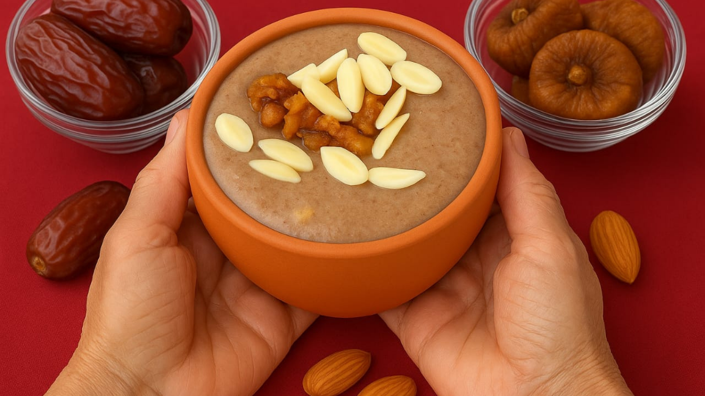

Banana NutriShake

Banana Nutrishake – Nature’s Energy Elixir in Every Sip
Picture a delicious, creamy shake that wraps you in the goodness of nature’s finest treasures — a blend so rich, it feels like a hug from within. Our Banana Nutrishake is your perfect companion for busy mornings, midday refreshment, or anytime you need a wholesome pick-me-up.
Bursting with natural sweetness, nourishing fats, and essential vitamins, this shake fuels your day with pure, lasting energy — gentle on your body and delightful to your taste buds. It’s more than just a drink; it’s your daily dose of vitality wrapped in creamy indulgence.
Why This Shake is Your Go-To Wellness Drink
- ⚡ Instant Natural Energy: A perfect blend of vitamins and minerals that keeps you active and alert throughout the day.
- üíì Heart & Brain Friendly: Loaded with healthy fats and antioxidants that support your heart and sharpen your mind.
- üåø Immune Boosting Goodness: Packed with nature‚Äôs best ingredients to help strengthen your body‚Äôs defenses.
- üç∞ Naturally Sweet & Nourishing: Balanced sweetness with a creamy texture that feels like a treat but fuels your health.
How It Brightens Your Everyday Life
- ✅ Kickstart your mornings with a quick, wholesome energy boost
- ✅ Recharge after workouts or long hours of work
- ✅ Treat kids to a nutritious, delicious snack they’ll love
- ✅ Support your overall wellness with a simple, tasty habit
A Sip of Nature’s Care, Anytime
This Banana Nutrishake is more than a drink — it’s a small moment of wellness and indulgence wrapped into one. Whether for your family or yourself, it’s a loving reminder that healthy food can also be delicious.
Dry Fruit Juice

Our Dry Fruit Juice is a delicious blend of nature’s finest dried fruits, carefully processed to preserve their rich taste and health benefits. Packed with vitamins, minerals, and antioxidants, this juice boosts immunity and revitalizes your body naturally. Each sip offers a burst of fruity sweetness combined with a hint of earthiness, refreshing your senses.
Ideal for those looking for a healthy energy boost, Dry Fruit Juice hydrates and nourishes without added sugars or preservatives. It supports digestion, skin health, and provides lasting stamina throughout the day. Whether consumed as a refreshing drink or a nutrient-packed mixer, it’s a perfect addition to your healthy lifestyle.
Herbal Tea

Our Herbal Tea is a calming blend of handpicked herbs known for their soothing and healing properties. Carefully crafted to promote relaxation and well-being, this tea helps reduce stress, improve digestion, and boost immunity. Its natural aroma and gentle flavor make it a delightful drink any time of day.
Perfect for those seeking a caffeine-free alternative, Herbal Tea blends ingredients like chamomile, tulsi, and lemongrass to cleanse and refresh your body. Regular consumption can improve sleep quality and support your body’s detoxification process. Embrace the tradition of herbal wellness with every warm cup.
Organic Honey

Our Organic Honey is a pure, unprocessed nectar harvested from wildflowers and forest blossoms. Naturally sweet and rich in antioxidants, it is a perfect natural sweetener for teas, desserts, and health tonics. The honey retains all its enzymes and nutrients, offering a wholesome taste of nature.
Known for its antibacterial and anti-inflammatory benefits, Organic Honey aids in soothing sore throats, healing wounds, and improving digestion. Its natural richness supports energy and immunity, making it a versatile and healthy addition to your daily diet. Enjoy the sweet taste of purity with every spoonful.
Millet Cookies

Millet Cookies combine wholesome grains with natural sweetness to create a healthy snack option that everyone can enjoy. Made from nutritious millets, these cookies are rich in fiber, vitamins, and minerals that support heart health and digestion. Perfect for tea-time or quick bites, they offer a crunchy, satisfying experience without guilt.
Gluten-free and packed with natural ingredients, Millet Cookies are an excellent choice for those with dietary restrictions or looking to eat clean. Their subtle nutty flavor and crisp texture make them a delightful treat that nourishes your body while indulging your taste buds.
Amla Candy

Amla Candy is a traditional Indian sweet made from the powerful Indian gooseberry, known for its high vitamin C content and antioxidant properties. This tangy-sweet candy not only tastes delicious but also helps boost immunity and improve digestion. It is a great way to enjoy the health benefits of amla in a tasty form.
Regular consumption of Amla Candy can support skin health, enhance metabolism, and promote detoxification. Free from artificial additives, it is a natural source of energy and wellness, making it a favorite among health-conscious individuals. Relish the perfect balance of sweet and sour with every bite.